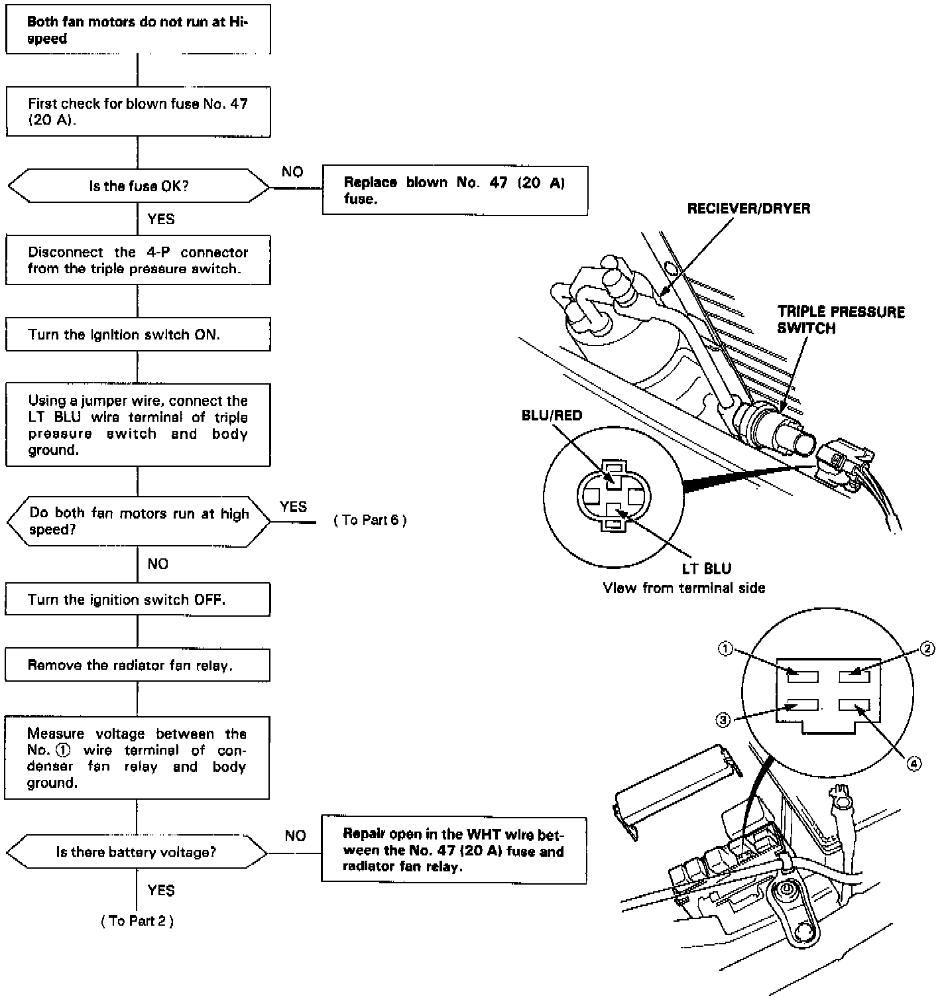
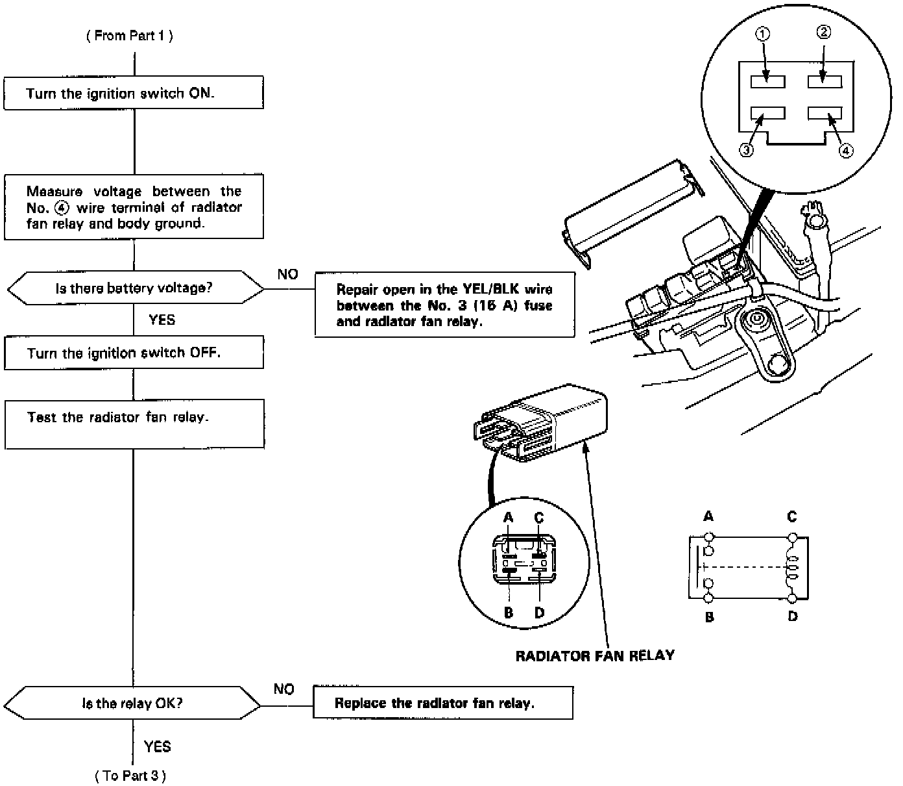
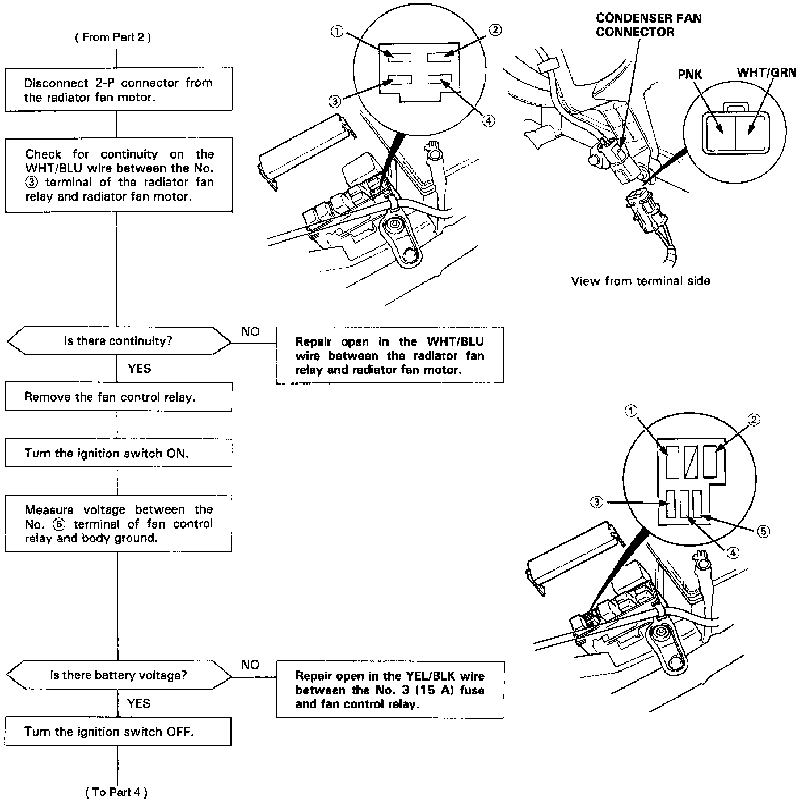
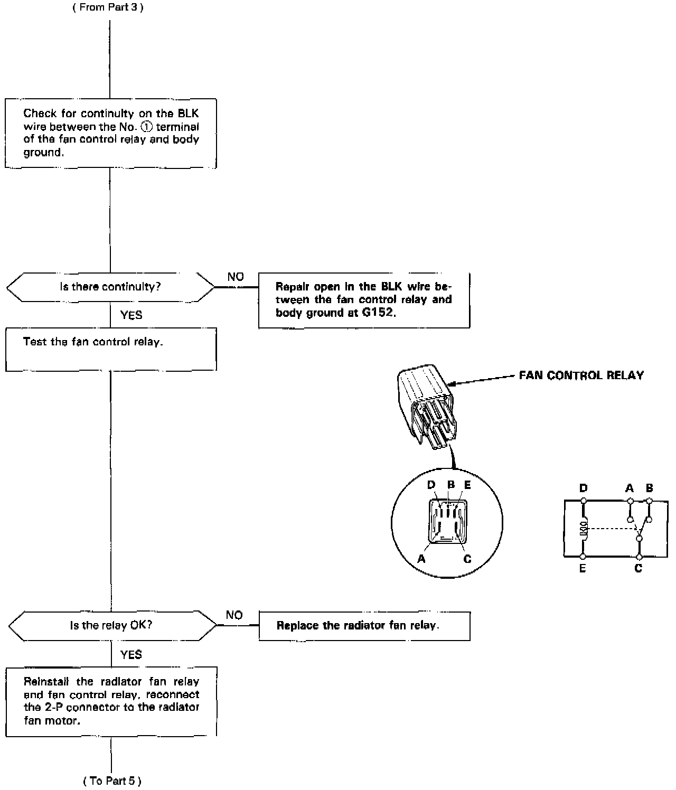
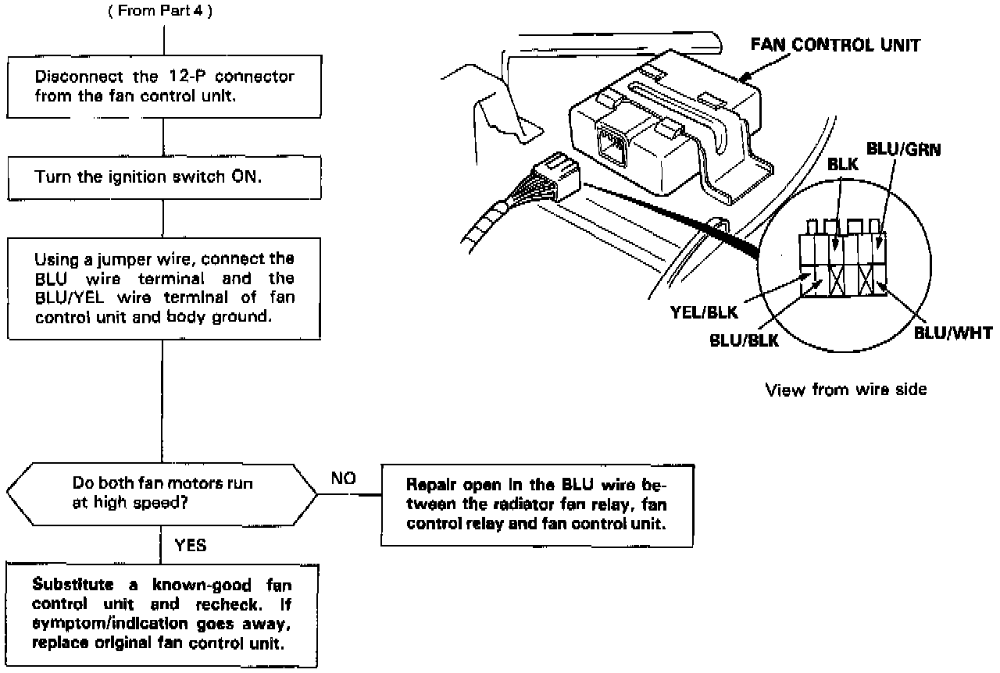
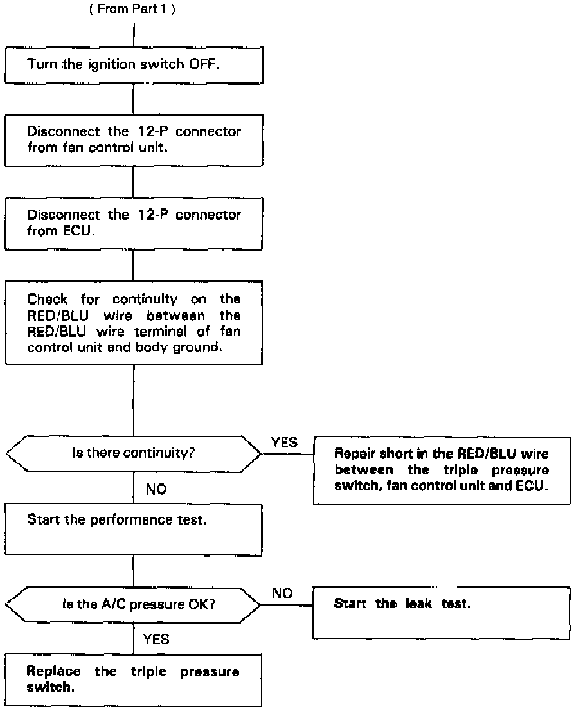

Both Fan Motors Do Not Run at High Speed
Fan Motors Don't Run At High Speed, Part 1 Of 6:

Fan Motors Don't Run At High Speed, Part 2 Of 6:

Fan Motors Don't Run At High Speed, Part 3 Of 6:

Fan Motors Don't Run At High Speed, Part 4 Of 6:

Fan Motors Don't Run At High Speed, Part 5 Of 6:

Fan Motors Don't Run At High Speed, Part 6 Of 6:
